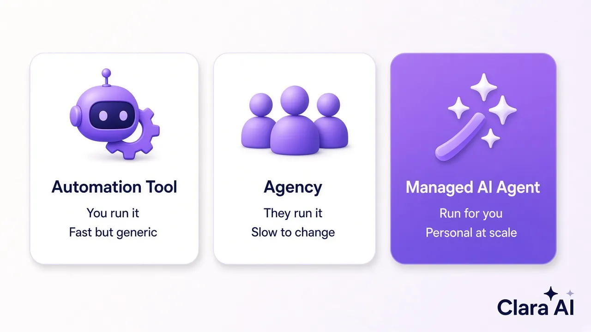

LinkedIn automation is software you run yourself to send invites and messages at scale. A LinkedIn agency is a team you pay to run outreach for you. For most B2B firms, the best fit is a third option: a managed AI agent that does the work for you, keeps every message personal and reports what happened, so you only talk to interested buyers.
This guide is for founders, sales heads and operations heads at B2B companies. You sell to other businesses. Your buyers are on LinkedIn. You know one good meeting can be worth a lot, but nobody on your team has the time to send personal invites, follow up three times and keep a clean list of who said what.
It is not for consumer brands that want more likes on posts, or for anyone looking for one-off social media posting. If you want a person to design and post content on Instagram, this is the wrong page. Here we only talk about outreach: finding the right buyers on LinkedIn, starting a conversation and turning that conversation into a sales call.
LinkedIn automation means using a software tool to do repeat tasks on LinkedIn. Most tools do the same few things: visit profiles, send connection requests, send a message when someone accepts, and send follow-ups if nobody replies. You pick the list, write templates with blanks such as first name and company, and press start.
The good side is clear. A tool is quick to set up, works every day and does not get tired. If you have a strong list and a strong message, a tool lets one person do the work of several.
The weak side is just as clear. A tool does exactly what you tell it, no more. If your template is generic, it sends a generic message to hundreds of people. Many buyers can now spot a template in the first line. The tool also does not decide who is worth a reply, does not handle the conversation once someone answers, and does not tell you why a campaign is failing. Someone on your team still has to run it, watch it and fix it.
There is also account risk. LinkedIn's User Agreement does not allow bots or other unapproved automated methods to access the service, send messages or copy data. Tools that blast hundreds of invites a day, or run from a browser plug-in with no limits, are the ones most likely to get an account restricted. For a founder whose personal profile is the company's best sales channel, that is a serious cost.
A LinkedIn outreach agency is a team of people who run outreach for you. A typical agency will agree your ideal buyer with you, build lists, write message sequences, log in to your account or a team account, send the messages and pass interested replies to you. Some also write posts for your profile.
The good side is that you hand the work to someone else. Good agencies bring experience from many campaigns and can write better first messages than a busy founder at midnight.
The weak side is speed, visibility and fit. Agencies run many clients at once, so changes to your list or message can take days. Many agencies still use the same automation tools underneath, so the account risk does not go away; it just moves out of sight. Reports are often a monthly slide with totals, not a clear record of who replied and what they said. And because the agency team does not live inside your business, the messages can sound like an outsider talking about your product.
Here is the plain comparison, with a managed AI agent added as the third option.
| Question | Automation tool | LinkedIn agency | Managed AI agent (Clara AI) |
|---|---|---|---|
| Who runs it day to day? | Your team | The agency team | Clara AI runs it for you |
| How personal are messages? | Templates with blanks | Depends on the writer and their workload | Written for each prospect from their profile and your offer |
| Who handles replies? | You | The agency, then you | The agent replies and hands warm leads to you |
| How fast can you change course? | Fast, if you have time | Often days | Fast, and you approve changes |
| What do you see? | Tool dashboard | Monthly report | Every invite, reply and lead, tracked |
| Account safety | Your responsibility | Often hidden from you | Human pace, personal messages, person in the loop |
| Best for | Teams with spare hands | Teams that want to hand off fully | B2B teams that want results without running it |

A tool makes sense when three things are true. First, you already have someone who knows outreach and has a few hours every week to run it. Second, you already know your ideal buyer and have a message that gets replies. Third, you are happy to own the account risk and keep sending limits low.
If one of these is missing, a tool tends to become an expensive way to send more of the wrong messages. We often meet teams who bought a tool, ran it for a month, got few replies and stopped. The tool was not the problem. Nobody had time to look at who was replying, change the message and try again.
An agency makes sense when you want to hand off the whole job and you are comfortable with slower changes. It also suits firms that want a human team writing profile posts as well as outreach. Before you sign, ask the agency three things: which tools they use underneath, how many invites a day they send from your account, and whether you can see every reply as it happens. If the answers are vague, the risk and the results are both out of your sight.
A managed AI agent mixes the strong parts of both. Like a tool, it works every day and never forgets a follow-up. Like an agency, someone else runs it, so your team does not have to. The difference is that the agent reads each prospect's profile and writes a message for that person, then keeps the conversation going when they reply.
This is how the Clara AI LinkedIn Outreach Agent works:
Because a person at Clara AI sets up and watches the agent, you get the speed of software without the "set it and forget it" risk. Across our agents, clients see a 60–70% cut in manual workflow time, which for outreach means your team spends its hours on sales calls, not on sending invites.
Results depend on your market, your offer and how clear your ideal buyer is. Here is what two real users saw. Haique Surfaces, as of 21 Oct 2026, had 345 people reached, 107 accepted (31%) and 14 replies. Sanjeet Ray, a business coach, in October 2026 had 149 invites, 43 connections, 12 conversations and 3 warm leads.
Notice what these numbers measure. The goal is not invites sent. The goal is real conversations with the right buyers, and then warm leads you can turn into calls. When you compare any tool or agency, ask for those numbers, with dates, not just "messages sent".
Whichever option you choose, the same few mistakes waste the most time:
A good tool, agency or agent should help you avoid all five. Ask any vendor how they handle each one.
Use these four questions:
If you are still deciding what kind of AI help your business needs, our guide on what a custom AI agent is explains the basics, and our checklist on how to choose an AI development company lists the questions to ask any vendor.
You will get far more from a first call if you can answer three short questions: what is your goal for LinkedIn outreach, who signs off on the decision, and what is your timeline? Bring a short note on who your best customers are today, and one or two messages that have worked for you before. That is enough for us to show you a first demo within 7 days.
When you message us on WhatsApp, tell us what your business does and what you want the agent to achieve. If we are not a fit, we will tell you straight away.